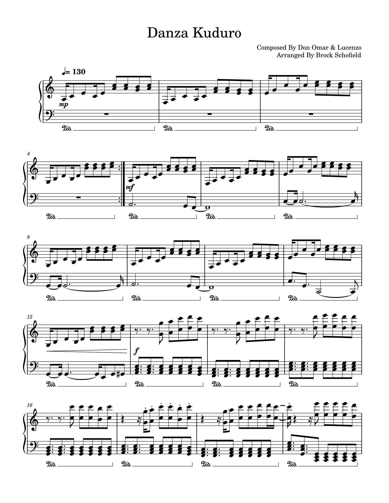

Angular
Locked joints and hard stops rather than flow.
Hard, fast, angular dancing out of Luanda, built on a local electronic music of the same name.


Kuduro — roughly hard bottom in Angolan Portuguese — took shape in Luanda around 1990. The producer Tony Amado is usually credited with naming it, and the sound welds Angolan semba and soca rhythms to cheap drum machines and, later, whatever software was on hand.
The dancing is stiff-limbed and percussive on purpose: sharp elbows, locked knees, jerky isolations, a lot of weight thrown into the floor. It is fast, athletic, and openly competitive, usually performed in a circle with dancers taking turns.
Angolan migration carried kuduro to Lisbon, where a second generation of producers pushed it further into club electronics. Portuguese-Angolan groups such as Buraka Som Sistema brought it onto European festival stages in the late 2000s, and the style now runs on both continents at once.
Locked joints and hard stops rather than flow.
Danced in a circle, one at a time, everyone watching.
Luanda and Lisbon have been feeding each other for thirty years.